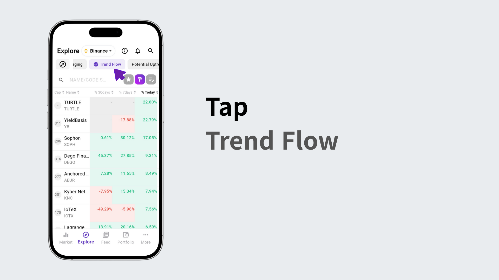

Go to the Explore tab.
Click the top preset button to instantly apply saved strategy settings.
For example, you can check coins that are rising or surging.
You can also see trend changes over 30, 7, or 1day periods.
While tracking continuous rises, you can also monitor moving average completions.
You can check if a coin has turned up but is not overbought.
All settings can be freely adjusted in your own way by clicking the edit button.